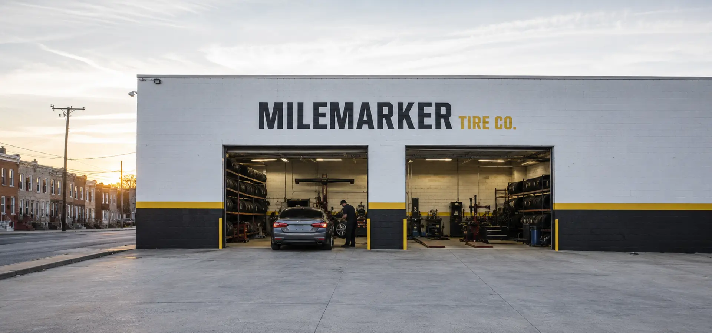

Tires and service,
without the runaround.
Good tires. Clear advice. Quality work. We keep it simple so you can get back on the road with confidence.
Straightforward from the start
Clear advice before any work begins.
01Check
We inspect the vehicle and show you what we see.
02Options
You get clear choices, honest tradeoffs, and a price before work starts.
03Your call
You decide what is right for your car and your budget.
Baltimore, Maryland
Come see us
3401 Boston St
Baltimore, MD 21224
Weekdays
Mon–Fri
7:30 AM–6:00 PM
Weekend
Saturday 8:00 AM–2:00 PM
Sunday closed